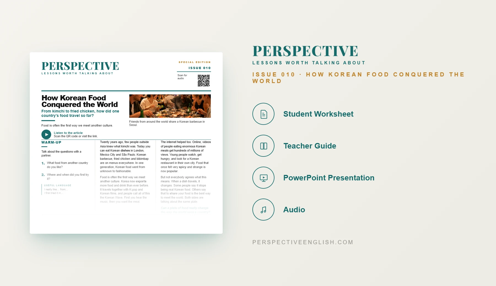

ISSUE 010 · SPECIAL EDITION
Korean Food ESL Lesson
From kimchi to fried chicken, how did one country's food travel so far?
A ready-to-teach A1–A2 ESL lesson exploring Korean food, culture and how Korean cuisine became popular around the world, with reading, listening, vocabulary, discussion and speaking activities.
CHOOSE YOUR LEVEL
Collection 01 includes Issues 006–010.

LESSON PREVIEW

ABOUT THIS LESSON
About This Beginner Korean Food ESL Lesson
Korean food has become popular around the world. Dishes such as kimchi, Korean barbecue, fried chicken and bibimbap can now be found in cities far beyond Korea.
This A1–A2 lesson uses accessible English to explore how food travels between countries and how Korean food has spread alongside K-pop, Korean films and online culture.
Students consider what makes a dish Korean, discuss how food changes when it travels and design a Korean restaurant menu for their own city.
FROM THE ARTICLE
WHAT'S INCLUDED
What's Included in the A1–A2 Korean Food Lesson?
- Magazine-style A1–A2 ESL student worksheet
- Original Korean food reading with audio recording
- Five accessible vocabulary items and comprehension questions
- Discussion about food, culture and Korean cuisine
- What Makes It Korean? critical-thinking activity
- Korean restaurant speaking challenge
- 60–100 word opinion-writing task
- Teacher guide and complete answer key
- Ready-to-use classroom presentation
GET THE COMPLETE LESSON
Ready to Teach Korean Food?
Get the complete A1–A2 Korean Food ESL lesson individually or save with Perspective Collection 01.
Secure checkout and instant digital delivery through Payhip.